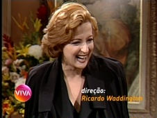

Quatro Por Quatro
| reprisada de | 19/05/2010 a 08/04/2011 |
|---|---|
| em 233 capítulos | |
| frequência | segunda-feira a sexta-feira |
| faixa | três e meia da tarde |
| horário alternativo | n/a |
Divertida novela de Carlos Lombardi, exibida originalmente na faixa das sete da noite, de 1994 a 1995, sobre quatro mulheres que, humilhadas por seus parceiros amorosos, decidem se vingar desses homens. Quatro Por Quatro inaugurou a faixa das 15h30 do Viva. Seu caráter cômico e arrojado evidenciou o trilho desta seção horária nos primeiros anos do Viva, cujas escolhas priorizaram tramas das sete.
Como, à época, o Viva não exibia novelas aos sábados, a reprise de Quatro Por Quatro durou quase 11 meses. Até dezembro de 2011, as novelas da tarde do Viva não tinham exibições alternativas na madrugada. Dessa maneira, Quatro Por Quatro foi exibida do início ao fim sem uma 2ª opção para o telespectador que perdesse um capítulo.
A partir de agosto de 2010, a faixa de Quatro Por Quatro passou a ser apoiada pelo hidratante corporal para gestantes Materskin. Posteriormente, a marca Seda também acordou anúncio junto à novela.
Em abril de 2011, Quatro Por Quatro foi substituída por Vamp. A confirmação da sucessora ocorreu em fevereiro daquele ano.
chamadas
As 2 primeiras chamadas da trama, exibidas a partir da estreia do canal, em maio de 2010, apresentavam os personages principais da história: as protagonistas femininas - "quatro mulheres com histórias diferentes, mas com um objetivo em comum"...
... e seus respectivos adversários - "quatro marmanjos que nunca se viram antes" - na vingança que sustentava a novela, estreada na quarta-feira de 19/05/2010.

Em setembro de 2010, uma nova chamada passou a promover "Quatro Por Quatro", anunciando que os planos de revanche das personagens estavam em alta na história.
"A lua possui 4 fases; a terra tem 4 elementos; e o ano, 4 estações. Mas bastam 4 mulheres para tirar tudo isso de ordem!"
- 
"Babalu ama Raí, mas finge que namora Ralado, apaixonado por Eduarda, para botar ciúmes em Gustavo, ex-marido de Abigail; que flerta com Samuel e passa por tia Pupu para atazanar a vida de Alcebíadaes, que traiu a mulher Auxiliadora; que se disfarça de condessa Carmem Almodovar e Maria do Socorro, para se vingar de Gustavo, ex de Abigail, e de Alcebíades, seu próprio ex. Por falar em ex, Tatiana foi abandonada por Fortunato, se apaixonou por Bruno, pai de Ângela. Ele se casou com Suzana, mesmo sem gostar dela. Tatiana finge ser Maria das Dores, para enlouquecer o Raí, de quem falamos lá no começo! Não acompanhou?"

"A vingança é um prato que se come frio, mas a batata dessas quatro pode estar assando!"
Em março de 2011, começaram a ser anunciadas as últimas semanas de Quatro Por Quatro, destacando os acontecimentos da reta final da novela.
Na sexta-feira de 08/04/2011, Quatro Por Quatro chegou ao fim no Viva.